PRODUCTS DESIGNED
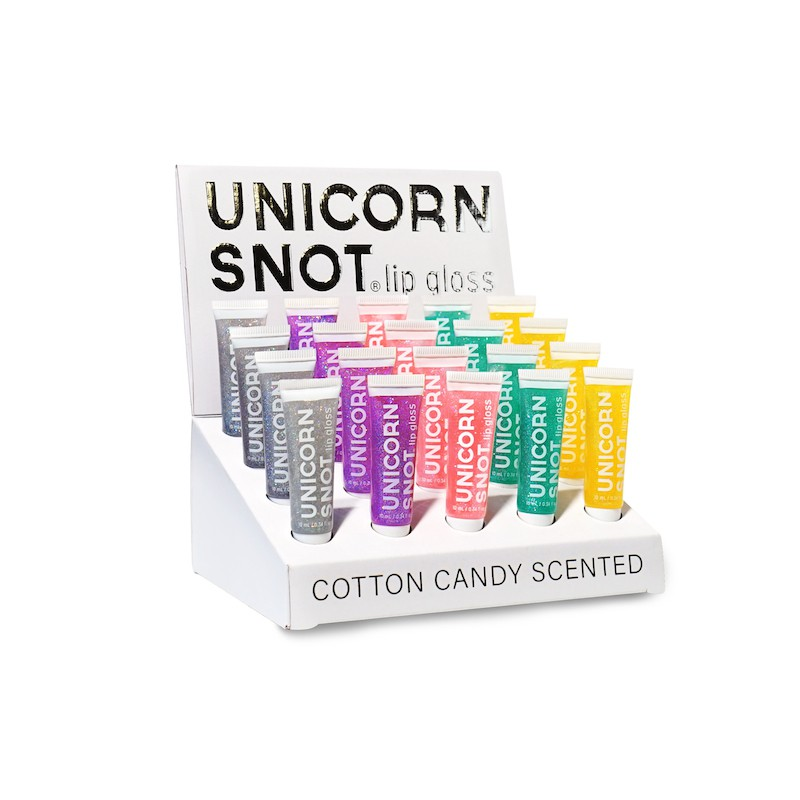
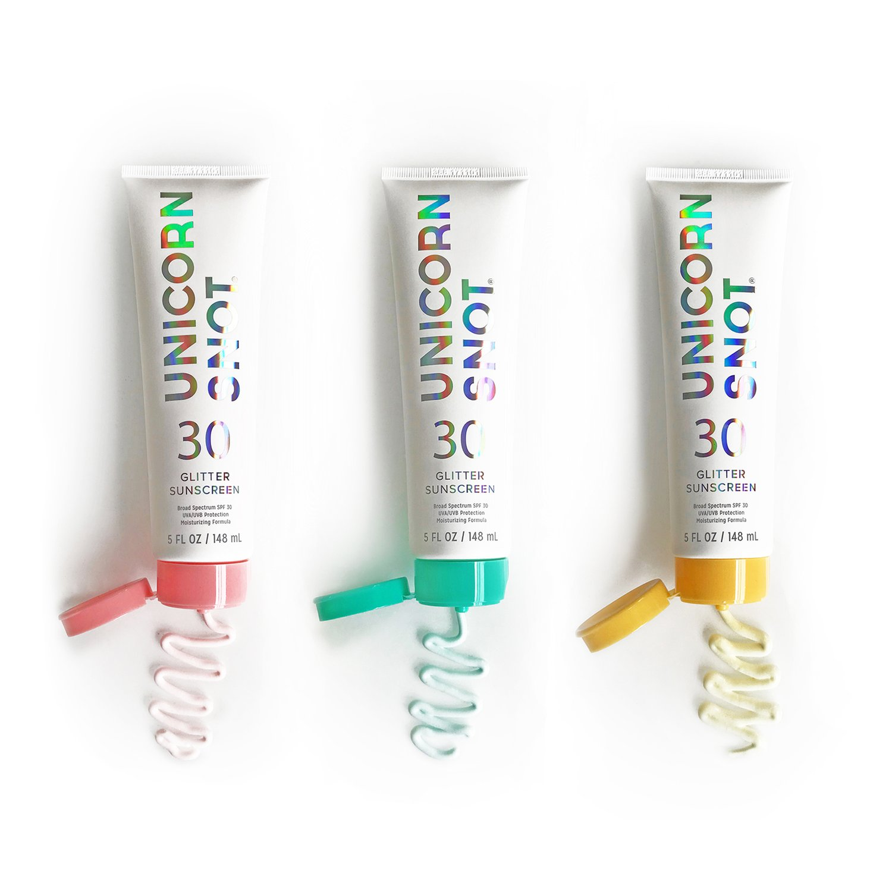
Unicorn Snot
Unicorn Snot started as a single body gel product in 5 colors but during my time expanded to include lip gloss, sunscreen and lip glitter. I led the sunscreen development by researching new factories to produce our perfect formula, worked with glitter suppliers and packaging manufacturers. In-house packaging prototypes were created using blank tube samples and CAD die-cutting machines to create samples with holographic lettering. It was my responsibility to ensure the formula and packaging complied with FDA and EU regulations for our worldwide customers and oversee product testing in accredited labs.
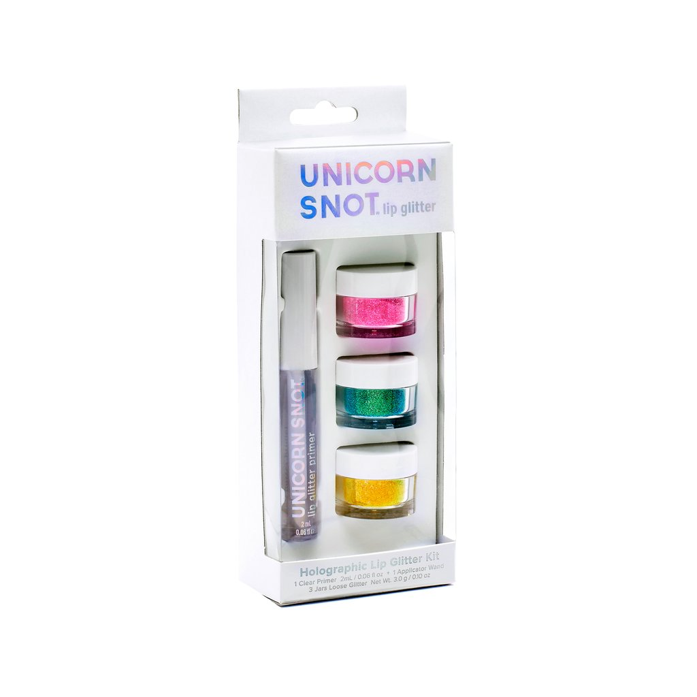
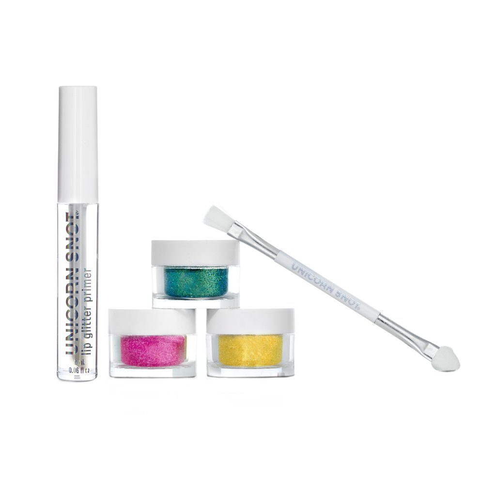
Unicorn Snot Lip Glitter, as our most unique product, also underwent user testing sessions that I ran in person with a range of users. I chose volunteers that ranged across the gender spectrum and who were a mix of casual make-up users to experienced professionals to those who never wore make-up in order to test multiple applicators and processes of application on themselves. After, we tested the various formulas against a variety of food and drink to ensure it could last an evening out without glitter stuck in everyone’s teeth. From there, we were able to refine the applicator designs and formulas for the primer to build the complete kit. We also created our own mix of glitter colors to match our original glitter gel line, with multiple swatch tests of color mixtures.
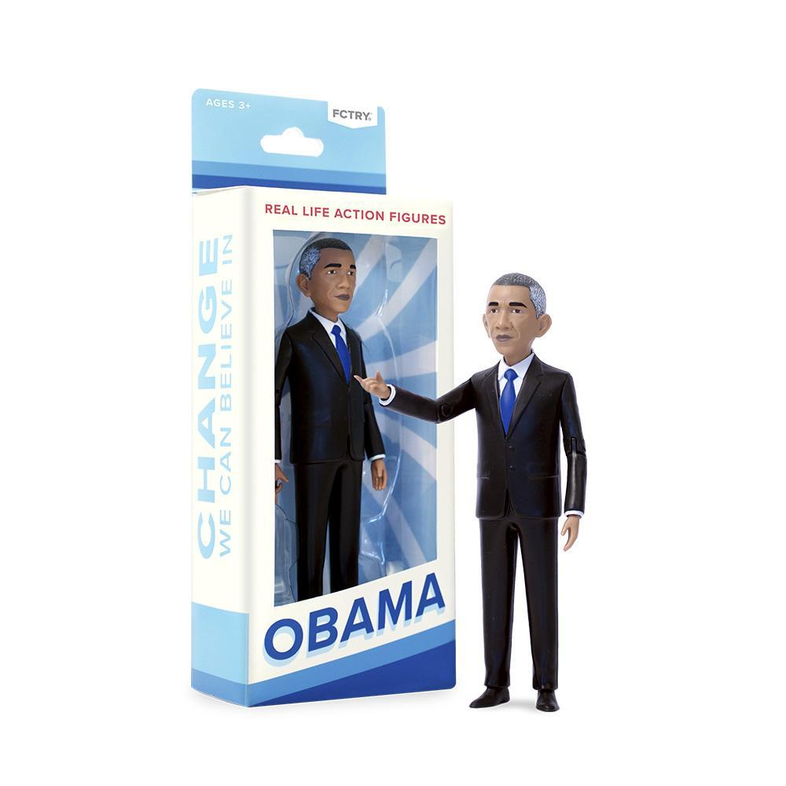
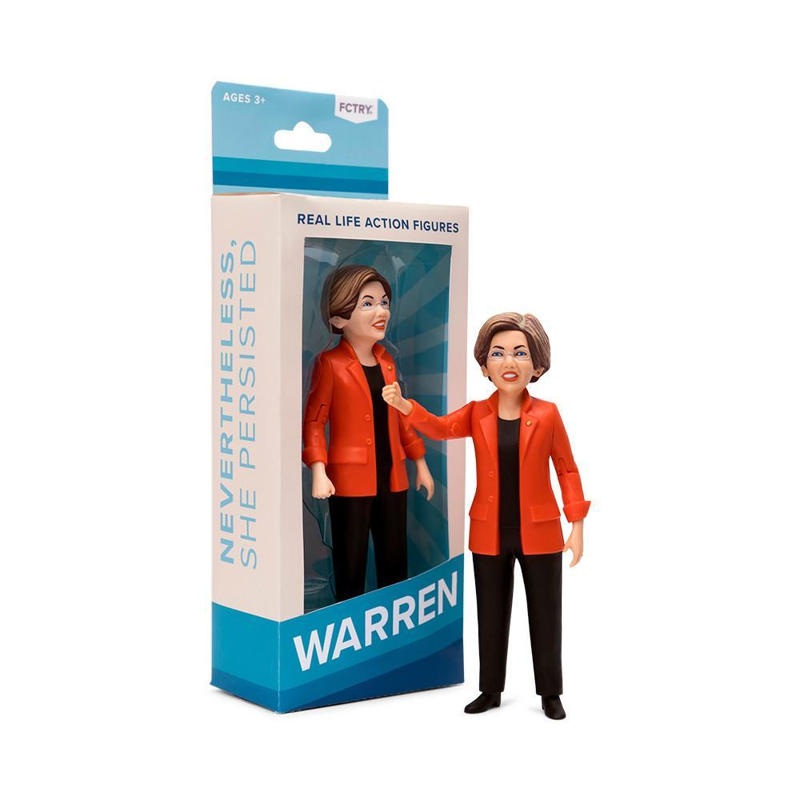
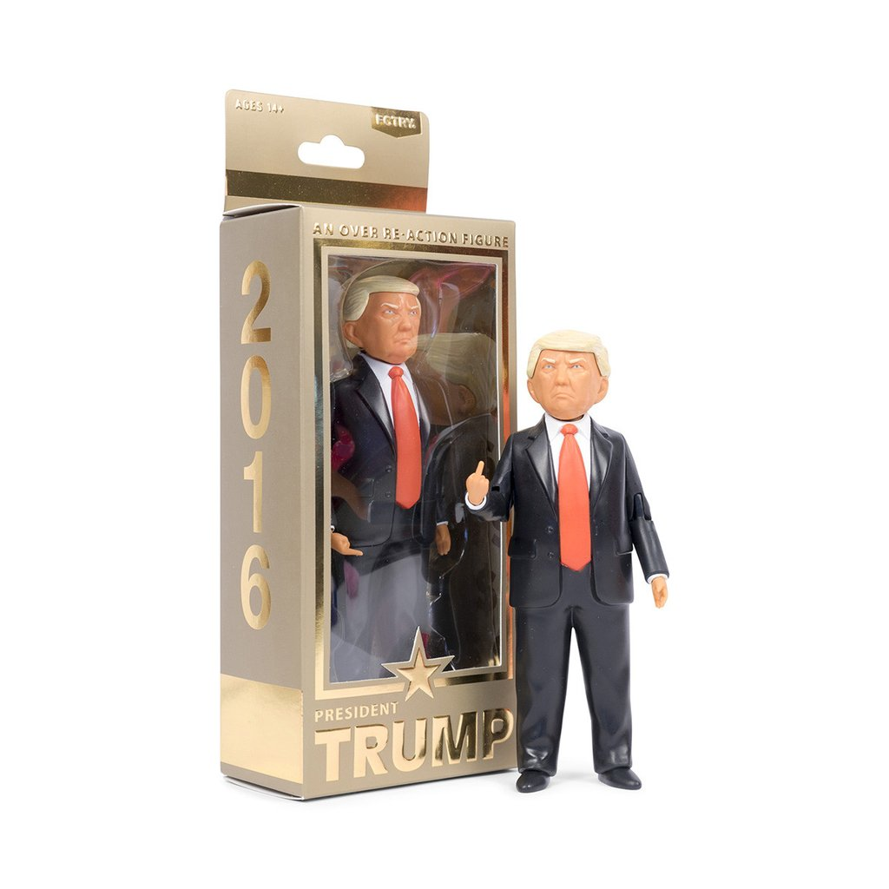
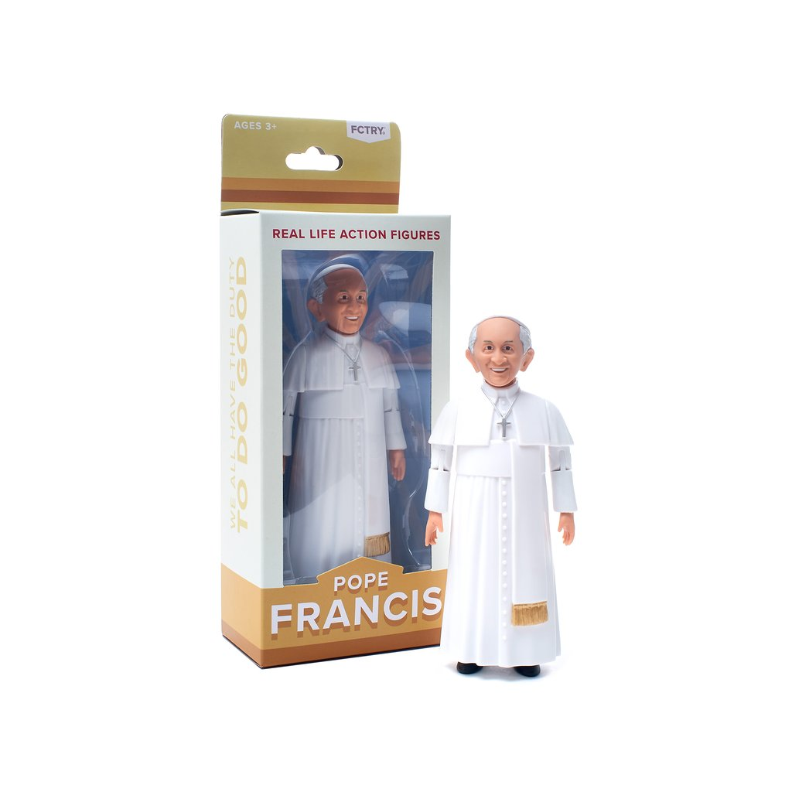
Real Life Action Figures
Each figure in the Real Life Action Figure line is hand-sculpted by Mike Leavitt, which is sent to us in our offices and I worked to oversee it’s manufacture - Pantone matching the colors, arranging 3D scanning and refinement of the model, testing prototypes and designing packaging. What began as a project released once per year, we released 4 figures in a single year, each funded on Kickstarter.
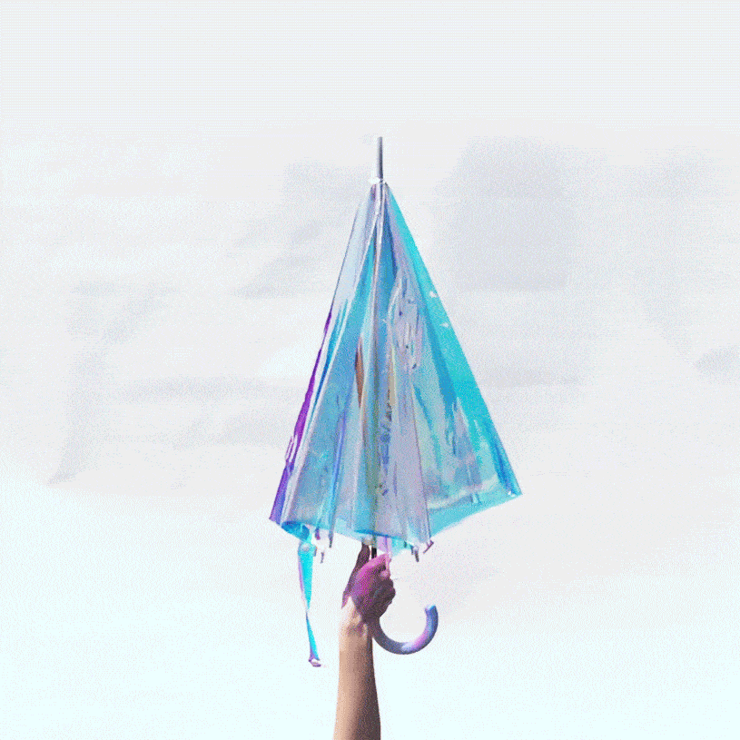
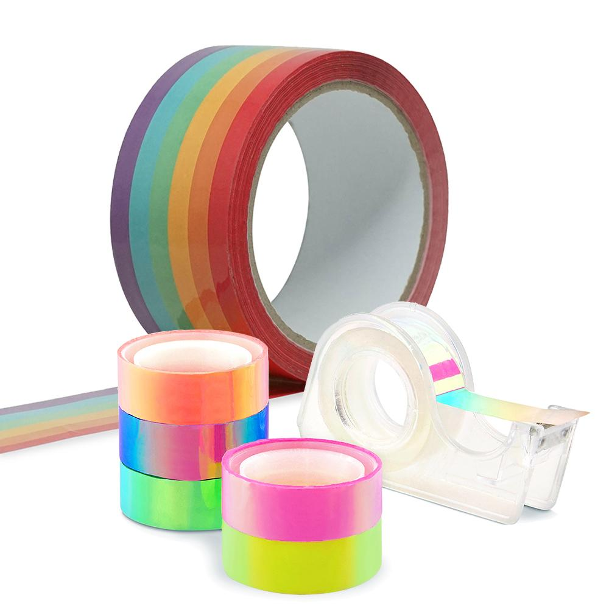
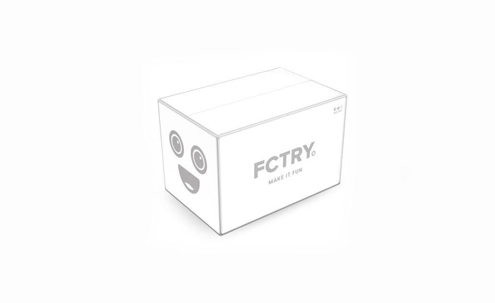
Magic Bodega
The Magic Bodega line encompassed a variety of items that were available outside of a full product line. The holo umbrella eventually joined the Hipsterkid line as an umbrella for children and a run of adult-sized umbrellas. Rainbow tape - a custom-colored packaging tape - and disco tape - a holographic tape set - were also developed. The Boxy shipping box was created for delivery of small shipments.